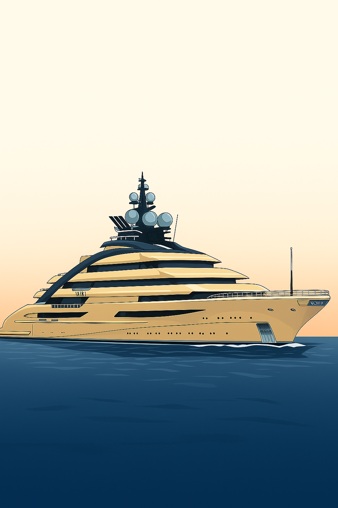
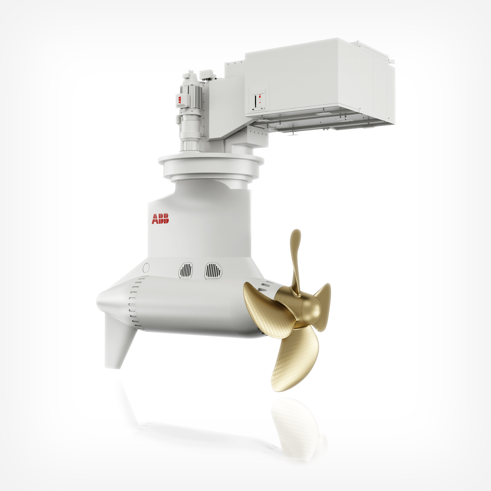

🚢 NORD: Ingeniería, poder y lujo sobre el mar
El NORD, entregado en 2021 por el prestigioso astillero alemán Lürssen Yachts, es uno de los superyates más impactantes y sofisticados que surcan los océanos. Concebido bajo el nombre de proyecto Opus, su diseño y construcción tardaron varios años, combinando lo último en tecnología naval con un nivel de lujo y personalización que lo convierten en una obra maestra flotante.
Con una eslora de aproximadamente 142 metros y una manga de casi 19 metros, el NORD no es solo un símbolo de opulencia: es un escaparate de innovación y avance tecnológico aplicado al sector naval.
⚓ Diseño y construcción
Diseño exterior
El NORD fue diseñado externamente por el famoso estudio italiano Nuvolari-Lenard, quienes lograron dotarlo de una personalidad única. Sus líneas marcadas, modernas y algo agresivas, transmiten fuerza y presencia en cualquier puerto o mar donde se aviste. A pesar de esa potencia visual, el diseño mantiene una elegancia intemporal gracias a la perfecta integración de cubiertas escalonadas, amplios ventanales y detalles que realzan la esbeltez del casco.
El casco está construido en acero de alta resistencia, pintado en un sofisticado gris azul oscuro, mientras que la superestructura, realizada en aluminio, contribuye a aligerar el peso total y optimizar la estabilidad. Entre sus detalles más notables, destacan los dos helipuertos y las generosas áreas abiertas con piscinas, jacuzzis y espacios para el relax.
Diseño interior
El interior del NORD es tan espectacular como su exterior. También obra de Nuvolari-Lenard, fusiona materiales nobles y tecnologías avanzadas con un gusto refinado por el detalle.

{kind=link}
{kind=link}
{kind=link}
{kind=link}
El yate puede alojar hasta 36 invitados en cerca de 20 camarotes, incluyendo suites VIP y un camarote principal que ofrece vistas panorámicas y privacidad absoluta.
✨ Características destacadas
El NORD se distingue por su capacidad de integrar elementos de confort, ocio y funcionalidad como ningún otro yate de su clase. Su concepto modular de cubiertas permite desde helipuertos operativos hasta pistas deportivas o zonas de eventos. Su iluminación convierte al NORD en un espectáculo nocturno cuando amarra en los puertos más exclusivos.
⚙ Tecnología y propulsión
El NORD es un hito de ingeniería naval moderna. Combina motores diésel convencionales con tecnología híbrida, minimizando las vibraciones y el ruido a bordo. Este sistema híbrido permite un ahorro significativo de combustible, reduciendo el impacto ambiental.
Sistema de propulsión Azipod
Entre sus avances destacan: sistema Azipod que permite maniobrabilidad excepcional, plataforma de control automatizado, sistemas de reducción de emisiones IMO Tier III, paneles de aislamiento acústico y red de fibra óptica interna. Dispone de sistema dinámico de posicionamiento que evita el anclaje en zonas ecológicas sensibles.